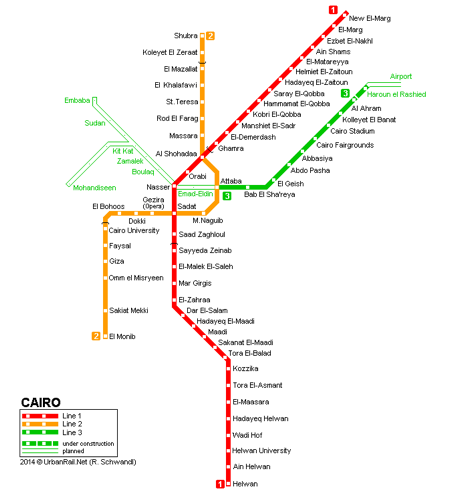

The first line extends from El-Marg El-Gadidah Station to Helwan Station in south Cairo. It consists of 35 stations. It has three interchange stations, two of which Anwar El-Sadat station and El-Shohadaa station connecting Line 1 and Line 2 and one Gamal Abdel Nasser station connecting Line 1 and Line 3.
It extends from Shubra El-Kheima station to Giza station. It consists of 20 stations. It has three interchange stations Anwar Al-Sadat station and Al-Shohadaa station connecting Line 2 and Line 1 and Ataba station connecting Line 2 and Line 3.
It extends from Cairo Airport station to Embaba station. It has three interchange station Gamal Abdel Nasser station connecting Line 1 and Line 3, Ataba station connecting Line 2 and Line 3, and Cairo University station connecting Line 2 and Line 3.
It will start from El-Haram district to the 6th of October city at the intersection of the Ring Road. The first phase will be 17.2 km, with 15 stations. It will have two interchange stations connecting Line 4 and Line 1 & 2. The fourth line will consist of 3 phases. The first phase will have three underground stations; El- El-Malek El-Saleh station, Giza station, and the Grand Egyptian Museum station and three above-ground stations Masaken El-Remaya station, Hadayek Al-Ahram station, and the final station at the intersection of the Ring Road and El-Wahat Road. The second phase will run from El-Malek El-Saleh station, El-Sawah Square, El- Mataria Square, crossing El-Qalaa area, Islamic Cairo area, Nasr City area, and ending at Zahraa Nasr City. As for the third phase, it will extend from El-Malek El-Saleh station to El-Sawah Square, El-Khosos area, and El-Mataria Square. The fourth line extends to the Ring Road and the 6th of October city entrance.
Hadayek El-Ashgar station, Hadayek El-Ahram station, the Grand Egyptian Museum station, El-Remaya Square station, El-Ahram station, El-Mariotia station, El-Arish station, El-Matbaa station, El-Talbia station, Madkour station, El-Mesaha station, Giza station (transfer station connecting line 4 and line 2), Giza Square station , Rawda station, El-Malek El-Saleh station (transfer station connecting line 4 and line 1), Fustat station, Salah El-Din Citadel station, El-Malek Mansour station, El-Hay El-Sades station "the 6th district", El-Tayran station, Abbas El-Akkad station, Makram Ebeid station, Ahmed El-Zomor station, El- Methaq station, and Mubarak Academy station.
It will extend from Maadi area to El- Tagmoa area and will be connected to Line 1 in Maadi station.
It will extend from Al-Ameria area to El-Tagmoa area and will be connected with Line 1 in Helmiet El-Zaitoun station.
The Cairo Metro fares depends on the numbers of stations travelled
From 1 to 9 stations: LE 5
From 10 to 16 stations: LE 7
More than 16 stations: LE 10
You can buy a cash wallet with a set of tickets charged in the card (card cost is 25 pounds). You can charge from 10 Egyptian pounds to 200 Egyptian pounds from any of the metro stations in all lines. You can charge the card more than one time if it is not damaged. The ticket prices are the same price as mentioned previously.